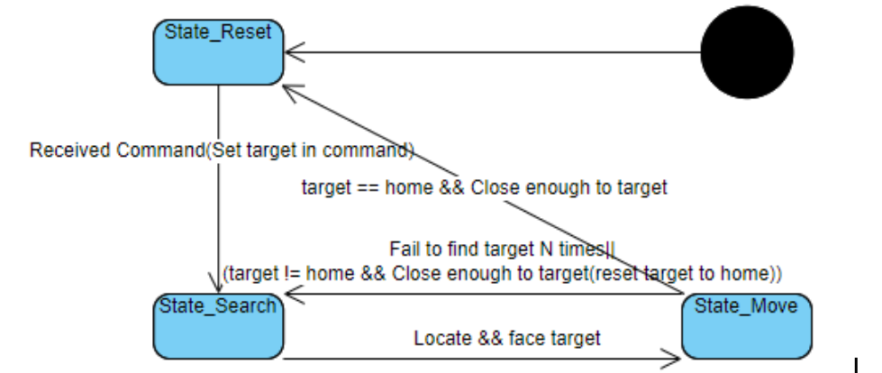

According to the name of our final project, Item retrieving robot, our project is to design a robot that can identify items and retrieve them to the designated place. Our project mainly consists of 4 parts:
The Objective of the project is to design the robot that can retrieve specific items to the designated location. Milestones at each stage are as the following:
Feature Detection:
In this project we choose to use Speeded Up Robust Features(SURF) as the algorithm to identify feature points. Because items can be placed in different distances a scale irrelevant feature point algorithm is required. Compared to Scale-invariant feature transform(SIFT), the SURF is faster and still has scale irrelevant features. Considering raspberry pi’s limited performance, we choose SURF.
For every item that is scanned, the scanner program captures all feature points in a designated box on the image camera captured. In order to have different views of an item, the scanner is able to scan several views and store them as a file. The scanner will also store some other important information to the file.
Locating and measuring:
In the beginning, the robot simply matches the feature points of the current image(dest) to the feature points in file(src) and calculates the average coordinates as the center of the object. Yet a single feature point is not guaranteed to be matched so that the number and distribution of matched feature points is unstable. As a result, the center becomes unstable and inaccurate.
Also the diameter of the object needs to be measured to calculate the distance, so another mechanism is applied to calculate the center as well as the diameter: homography. Homography describes the relationship between src feature points and dest feature points with a matrix. So the new center and diameter can be calculated with the homography matrix, which is very accurate and stable by testing.
Motor Control:
By controlling the duty cycle of PWM the speed of the motor can be controlled. However because of the fraction, if the speed(duty cycle) is lower than a threshold, the robot car won’t be moving. Another problem is that if the robot is constantly moving the camera will capture blurred images. So instead of controlling the speed, the robot controls the time that motors run at maximum speed. In order to achieve that we included a timer from https://github.com/99x/timercpp. With a timer the robot is able to control the motor asynchronously.
Overall logic:
The robot starts with search mode, searching the item by rotating the robot. Once located the item, the robot moves toward the item and keeps facing the item. When it reaches a certain distance the robot will “rush” to shovel the item. Then it sets home as the target and repeats the process without the final “rush”.
In order to check if an item can be appropriately recognized and located, we developed a “loader” program that does feature matching and displays the center and diameter on the screen. If the program can locate the target item from distances, the item is suitable for the robot to pick up if size is also appropriate.
So first we tested the feature points capture/save/load/match with scanner and loader program to make sure it works correctly. Then we run the motor and test it with motors to really retrieve items. In order to do that we have several adjustment to our previous design, including:
State machine of the robot:
After all the design and testing, our robot can run as we expected and achieve the main goals. In the demo, we extracted and saved the feature points file of three items: a broken raspberryPi, a raspberryPi screen, a raspberry box, and in the command line, we asked our robot to retrieve the raspberry Pi. The robot then turned in clockwise slowly, ignoring the existence of the other two items. When it faces in the direction of the specified raspberry Pi machine, it will move forward while adjusting the direction. After it detects that the distance is close enough, the robot will rush for a short time to get the item into the shovel. Then it turned in clockwise again searching for home. After it found the direction of home, it will move towards home. If we shift the home to another direction, the robot will turn again and redirect home.
Our robot has successfully achieved the goal of scanning the features of items, recognizing the specified items and retrieving items. The robot can run in the speed and direction that we assign, and the accuracy can meet our expectations.
There are some designs that we are not able to achieve due to the restriction of time and conditions.
1 2 3 4 5 6 7 8 9 10 11 12 13 14 15 16 17 18 19 20 21 22 23 24 25 26 27 | * * blink.c: * blinks the first LED * Gordon Henderson, projects@drogon.net */ #include <stdio.h> #include <wiringPi.h> int main (void) { printf ("Raspberry Pi blink\n") ; if (wiringPiSetup () == -1) return 1 ; pinMode (0, OUTPUT) ; // aka BCM_GPIO pin 17 for (;;) { digitalWrite (0, 1) ; // On delay (500) ; // mS digitalWrite (0, 0) ; // Off delay (500) ; } return 0 ; } |
Your good names. Probably Acknowledgments and Thanks